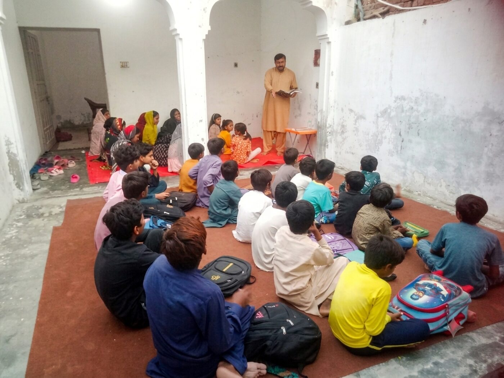

About Us

Universal Truth Ministry began with a family in Layyah who couldn't sit still while their neighbors went without.
Long before it had a name, our founder, Zuhaib Asgher, was a boy watching his parents give whatever they had. Money when it was tight. Advice when families felt lost. A home that stayed open to anyone who needed it. That home became the first classroom.
A woman used to travel a long way each week to teach the local children about Jesus, but she had nowhere to gather them. So the family made room. Week after week, the house filled with children learning, singing, and being cared for. Around the same time, from 2007 to 2010, the same welcome was extended to a sewing teacher, so the girls in the area could learn a skill they'd carry for life. None of it was planned as a "ministry." It was just people making space for others.
When that teacher married and moved away, the children could have been left with nothing. Instead, the family took on the work themselves. Parents and children together kept the weekly classes going in their own home. What had started as a favor had quietly become a calling.
Then, in 2016, Zuhaib's father passed away. It was a season of grief and real hardship. The family moved to Lahore to rebuild, to finish their education, and to find their feet again. The home in Layyah remained rented out for years. But the place, and the people in it, were never forgotten.
In January 2024, Zuhaib came back. He reopened the old family home, and on that same ground, Universal Truth Ministry began again, this time with a name and a clear purpose. That home is now the Universal Truth Education Center.
That home hadn't sat empty in the meantime. For years before 2024, it was rented out, and that rent was income the family depended on. When Zuhaib decided to reopen it as a school instead of continuing to rent it out, he gave up that income on purpose. A dependable rent check became a classroom, because the children of Layyah needed the house more than the family needed the rent.
Today, 35 children (15 boys and 20 girls, ages 5 to 16) come through its doors for a real education, for Bible teaching, and for a community that genuinely cares whether they show up.
We do this because South Punjab has been overlooked for far too long. Children in places like Layyah too often grow up without the things that give them a future: good schooling, steady guidance, and adults who choose to stay. Universal Truth Ministry exists to be that presence. It started with one open door, and we're still making room.
Since reopening in January 2024, every cost of running the Education Center, including classroom supplies, daily operations, and staff stipends, has been paid for personally by founder Zuhaib Asgher. There has been no outside funding to date.
Zuhaib holds a BS in Computer Science from Forman Christian College and works as a software engineer and freelancer. That income has funded the ministry from the very beginning, and it still does today.
We're proud of what one family has been able to build, and we're not asking out of desperation. But South Punjab's needs are bigger than one person, or one family, can meet alone. Universal Truth Ministry is now looking for friends, churches, and like-minded people who want to help this work grow into something that lasts.